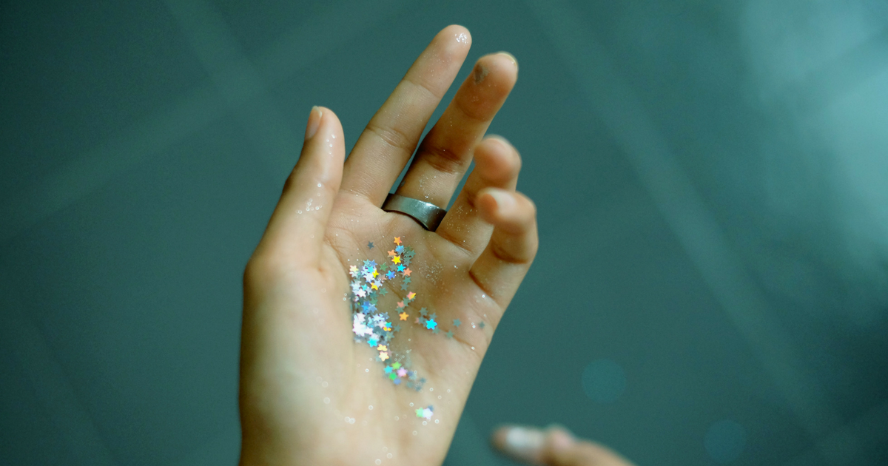

|
|
သွေးဆုံးချိန်မှာ ကြင်နာပါသွေးဆုံးချိန်မှာ ကြင်နာပါ သွေးဆုံးပြီး အမျိုးသမီးတစ်ယောက်ကို ဘာဖြစ်မှာ အကြောက်ဆုံးလဲလို့မေးရင် သူတို့က ရင်သားကင်ဆာ ဒါမှမဟုတ် အဆုတ်ကင်ဆာလို့ ဖြေပါလိမ့်မယ်။ ဒါပေမဲ့ အသက် ၅၀ ကျော် အမျိုးသမီးတွေကို အဓိက ခြိမ်းခြောက်နေတာကတော့ နှလုံးရောဂါပါပဲ။ အများအားဖြင့် ကိုယ့်ကိုယ်ကို အချိန်မရွေး ရုတ်တရက် နှလုံးဖောက်ပြန်တာ- Heart Attack ဖြစ်နိုင်ပါတ ယ်။ လေဖြတ်နိုင်တယ်ဆိုတာကို သိပ်မတွေးမိကြပါဘူး။......... |
ရှက်ရှက်မှာ အဖုအပိန့် ဖြစ်နေပြီလားရှက်ရှက်မှာ အဖုအပိန့် ဖြစ်နေပြီလား မိန်းကလေးတွေအနေနဲ့ ကိုယ့်ရဲ့ရှက်ရှက် (အမျိုးသမီး မျိုးပွားအင်္ဂါ သို့မဟုတ် ယောနိ) အနားမှာ အဖု၊ အပိန့်လေးတွေဖြစ်တဲ့အခါမျိုး ဒါမှမဟုတ် ရှက်ရှက်ရဲ့ အရေပြားအရောင်တွေက ပုံမှန်ဟုတ်ရဲ့လားလို့ စိုးရိမ်တဲ့အခါမျိုး ရှိတတ်ပါတယ်။ ရှက်ရှက်နားမှာ အဖု အပိန့်လေးတွေက အတွေ့ရများပါတယ်။ အထူးသဖြင့် အရွယ်ရောက်လာတဲ့အချိန်မျိုးမှာ ဖြစ်တတ်ပါတယ်။ ဒါကြောင့် ဒီအဖုအပိန့်လေးတွေနဲ့ ပတ်သက်ပြီး ဖြစ်နိုင်တဲ့ အခြေအနေနဲ့....... |
ရာသီစက်ဝန်း တိုပြီး သွေးဆင်းနည်းသောအခါရာသီစက်ဝန်း တိုပြီး သွေးဆင်းနည်းသောအခါ ရာသီစက်ဝန်းက အမျိုးသမီးတစ်ယောက်နဲ့တစ်ယောက် မတူညီကြပါဘူး။ ပုံမှန်ရက်ထက်တိုပြီး သွေးဆင်းနည်းတာ စိတ်ပူရသလားဆိုတာကိုတော့ ဒီဆောင်းပါးလေးမှာ ဖော်ပြပေးလိုက်ပါတယ်။ ရာသီ စက်ဝန်းက တူတူပဲလား ရာသီစက်ဝန်းက အမျိုးသမီးတစ်ယောက်နဲ့တစ်ယောက် မတူညီကြပါဘူး။ ဓမ္မတာလာတဲ့အခါ ၃ ရက်ကနေ ၇ ရက် အထိ ကြာနိုင်ပါတယ်။ တကယ်လို့ သင်ဟာ အရင်က ငါးရက်ခြောက်ရက်လောက် ဓမ္မတာလာပြီး အခုလမှာ.......... |
ကဖိန်းကင်းစင်သောဘဝကဖိန်းကင်းစင်သောဘဝ သင့်ကို ကော်ဖီဖြတ်ခိုင်းတာ မဟုတ်တဲ့အတွက် ခေါင်းစဉ်မြင်ပြီး လန့်မသွားပါနဲ့။ အခုဆိုရင် လူတိုင်းနီးပါးက ကော်ဖီသောက်သုံးမှု များလာကြပါတယ်။ ကော်ဖီသောက်ရင် ခန္ဓာကိုယ်ရဲ့ ဇီဝကမ္မဖြစ်စဉ်တွေကို မြန်စေတာကအစ အယ််လ်ဇိုင်းမားရောဂါ မဖြစ်အောင် ကာကွယ်ပေးတာအဆုံး ကောင်းကျိုးတွေလည်း ရှိပါတယ်။ ဒါပေမဲ့ ကဖိန်းဓာတ်ကင်းစင်ရင်ကော ဘာအကျိုကျေးဇူးတွေ ရှိနိုင်လဲ။ ကဖိန်းဓာတ်ကင်းစင်အောင် ဘယ်လို နေထိုင်ကြမလဲ။ ဒီဆောင်းပါးမှာ ကော်ဖီလျှော့သောက်လိုက်လို့ ပိုက်ဆံသက်သာတာအပြင် နောက်ထပ်ရရှိလာမယ့်........ |
အမျိုးသမီးရောဂါ ဘာကြောင့် ရှာရခက်တာလဲအမျိုးသမီးရောဂါ ဘာကြောင့် ရှာရခက်တာလဲ မင်္ဂလာပါ ဒီတစ်ခါမှာတော့ အမျိုးသမီးတွေမှာ ရောဂါရှာရခက်တဲ့ ကျန်းမာရေးအခြေအနေတွေကို ဆွေးနွေးပေးသွားမှာ ဖြစ်ပါတယ်။ အမျိုးသမီးရောဂါတွေမှာ မျိုးပွားအင်္ဂါနဲ့ ပတ်သတ်တဲ့ ကျန်းမာရေးအခြေအနေတွေက ရောဂါအမည်တပ်ဖို့ ခက်ခဲလေ့ ရှ်ိပါတယ်။ ဒါကြောင့် စစ်ဆေးမှုတွေလည်း သေသေချာချာ လုပ်ရတတ်ပါတယ်။ အထူးသဖြင့် အမျိုးသမီးတွေက ရှက်တတ်တဲ့အတွက် ဒီအကြောင်းအရာတွေကို … |
ကိုယ်ဝန်ဆောင်ချိန်မှာ ဗိုက်အောင့်ဗိုက်နာတာ ဘာကြောင့် ဖြစ်ရတာလဲကိုယ်ဝန်ဆောင်ချိန်မှာ ဗိုက်အောင့်ဗိုက်နာတာ ဘာကြောင့် ဖြစ်ရတာလဲ .မင်္ဂလာပါ ဒီတစ်ခါမှာတော့ ကိုယ်ဝန်ဆောင်ကာလမှာ ဖြစ်တတ်တဲ့ ဗိုက်အောင့်ဗိုက်နာခြင်းအကြောင်းတွေကို ဆွေးနွေးပေးသွားမှာပါ။ ပထမဆုံးအနေနဲ့ အမျိူးသမီးတစ်ဦးရဲ့ ဘဝမှာ အမြင့်မြတ်ဆုံးလုပ်ဆောင်ချက်တစ်ခုဖြစ်တဲ့ ကိုယ်ဝန်လွယ်ထားပြီး အနာဂတ်ရဲ့လူသားမျိုးဆက်တွေကို မွေးထုတ်ပေးတဲ့အတွက် ဂုဏ်ယူပါရစေခင်ဗျာ။ ကိုယ်ဝန်ဆောင်တာနဲ့ ပတ်သက်ပြီး ရှေးလူကြီးတွေ ပြောခဲ့တဲ့ စကားတွေထဲက တစ်ခုကတော့ ကိုယ်ဝန်သည်က........ |

|
အသက် ၂၀၊ ၃၀၊ ၄၀ အရွယ်တွေမှာ ဟော်မုန်းဓာတ် ညီမျှအောင် စားသောက်သင့်တဲ့ အစားအစာများအသက် ၂၀၊ ၃၀၊ ၄၀ အရွယ်တွေမှာ ဟော်မုန်းဓာတ် ညီမျှအောင် စားသောက်သင့်တဲ့ အစားအစာများ သင့်ရဲ့ဟော်မုန်း အဆင့် ဟာ ခန္ဓာကိုယ်တစ်ခုလုံးအတွက် အဓိကအရေးကြီးတဲ့ အခန်းကဏ္ဍမှာ ပါဝင်ပါတယ်။ ဟော်မုန်းတွေက သင့်ရဲ့စားသောက်ပုံ၊ နေထိုင်ပုံ၊ စိတ်အခြေအနေထိ အများကြီး လွှမ်းမိုးနိုင်ပါတယ်။ စိတ်ဖိစီးမှု၊ အိပ်ချိန်မမှန်မှု၊ ကဖိန်းဓာတ် လွန်ကဲမှုတွေက သင့်ရဲ့ဟော်မုန်းဓာတ်တွေကို များစွာ ပြောင်းလဲစေပါတယ်။ ဒါတွေရဲ့ … |

|
ခြေကျင်းဝတ်နာခြင်းရဲ့ နောက်ကွယ်က အကြောင်းရင်း ၁၀ မျိုးခြေကျင်းဝတ်နာခြင်းရဲ့ နောက်ကွယ်က အကြောင်းရင်း ၁၀ မျိုး ခြေကျင်းဝတ်နာနေတာကို အရေးမကြီးသလို မနေလိုက်ပါနဲ့။ ကျိုးတာကစလို့ အရွတ်နာခြင်း၊ ကြွက်သားနာခြင်း၊ အဆစ်ရောင်ခြင်းတွေအထိ ဖြစ်နိုင်ပါတယ်။ အားကစားလုပ်လို့ပဲဖြစ်ဖြစ် လမ်းလျှောက်များလို့ပဲဖြစ်ဖြစ် ခြေကျင်းဝတ်နာကျင်ကိုက်ခဲခြင်းကို လူတိုင်းခံစားဖူးမှာပါ။ ခြေကျင်းဝတ်နာတိုင်းလည်း ဆေးခန်းသွားစရာ မလိုပါဘူး။ ခဏဖြစ်ပြီး ပြန်ကောင်းလာနိုင်ပါတယ်။ ဒါပေမဲ့ သတိထားရမယ့်အကြောင်းလေးတွေတော့ ရှိပါတယ်။ ဆက်လက်လေ့လာလိုက်ရအောင်။ ၁) အရွတ်နာခြင်း အားကစားလုပ်တဲ့အခါမှာ ထိခိုက်မှုအများဆုံးက ...... |

|
ဓမ္မတာမလာသေးခင် ဖြစ်တတ်တဲ့ ပြဿနာတွေကို ဘယ်လို လွယ်ကူအောင် လုပ်ကြမလဲဓမ္မတာမလာသေးခင် ဖြစ်တတ်တဲ့ ပြဿနာတွေကို ဘယ်လို လွယ်ကူအောင် လုပ်ကြမလဲ မင်္ဂလာပါ ဒီတစ်ခေါက်ဆောင်းပါးမှာတော့ ဓမ္မတာ မလာသေးခင် ကြုံတွေ့ရတဲ့ ခက်ခဲတဲ့ အခြေအနေတွေကို အလွယ်တကူ သက်သာစေဖို့အတွက် နည်းလမ်းတွေကို ဖော်ပြပေးသွားမှာပါ။ ဓမ္မတာ မလာမှီမှာ ဖြစ်တတ်တဲ့ လက္ခဏာတွေကတော့ အမျိုးသမီး တစ်ယောက်နဲ့ တစ်ယောက် မတူညီကြပါဘူး။........ |
အသက် ၄၀ ကျော်လာတဲ့အခါ ဘာကြောင့်ဝိတ်ချဖို့ ခက်သွားတာလဲအသက် ၄၀ ကျော်လာတဲ့အခါ ဘာကြောင့်ဝိတ်ချဖို့ ခက်သွားတာလဲ အမျိုးသမီးအများစုဟာ အသက် ၄၀ ကျော်လာရင် ဖြစ်တတ်တာတွေကို တကယ် မသိကြပါဘူး။ တကယ် သိလာရင်တော့ ဒါဟာ အံသြရတဲ့ အခိုက်အတန့် ဖြစ်နေမှာပါ။ အသက်ကြီးလာတာနဲ့အမျှ ခန္ဓာကိုယ်မှာ အပြောင်းအလဲတွေ ဖြစ်လာပါတယ်။ တချို့ကတော့ အသက်ကြောင့်ဖြစ်ပြီး တချို့ကတော့ သွေးဆုံးကိုင်တာကြောင့် ဖြစ်ပါတယ်။ ဒီလို အကြောင်းတွေကြောင့်ပဲ ဝ....... |
ကိုယ်ဝန်ဆောင်ချိန် ဆေးလိပ်ငွေ့အန္တရာယ်မှ ရှောင်ရှားနည်း (၄) သွယ်ဆေးလိပ်သောက်ခြင်းဟာ ကျန်းမာရေးကို ဆိုးရွားစွာထိခိုက်စေနိုင်ပါတယ်။ ထို့အတူ ဆေးလိပ ်မသောက်ပေမဲ့ ဆေးလိပ်ငွေ့ ရှူရှိုက်မိသူမှာလည်း တူညီတဲ့ ထိခိုက်မှုကို ခံစားရနိုင်ပါတယ်။ ဆေးလိပ်ငွေ့ကို များစွာ ရှူရှိုက်မိလေ ကျန်းမာရေးအတွက် အန ္တရာယ်ရှိလေ ဖြစ်ပါတယ်။ . . . |

|
မျက်နှာတစ်ခြမ်းအကြောလိုက်ခြင်းဘာလက္ခဏာမှ မပြဘဲ ရုတ်တရက်ကြီး ကိုယ့်မျက်နှာတစ်ခြမ်းက အကြောဆွဲသလိုဖြစ်သွားရင် ဘယ်သူမဆို ကြောက်လန့်မိမှာပါပဲ။ ဘာလို့ မျက်မှာတစ်ခြမ်းတည်း ဒီလိုအကြောလိုက်ရတာလည်း တစ်ချက်လောက်အဖြေရှာကြည့်ရအောင်ပါ။ . . . |
တားဆေးတွေ ရေရှည်သုံးစွဲသင့်သလားသန္ဓေတားနည်း အမျိုးမျိုးထဲမှာ သောက်ဆေးအနေနဲ့လာတဲ့ သန္ဓေတားဆေးကို အမျိုးသမီးအတော်များများ ရွေးချယ်ကြပါတယ်။ ဝယ်ယူသုံးစွဲရတာ လွယ်ကူရိုးရှင်းသလို ငွေကုန်ကြေးကျလည်း သိပ်မများတာကြောင့် သုံးစွဲသူ များပြားပါတယ်။ ဒါပေမဲ့လည်း ဒီလို တစ်နေ့တစ်လုံးသောက်ရတဲ့ သန္ဓေတားဆေးတွေကို အချိန်အကြာကြီး သောက်သုံးမိနေရင် ဘာတွေဖြစ်နိုင်သလဲ။ လေ့လာကြည့်ကြရအောင်.. သန္ဓေတားဆေး(သောက်ဆေး) ကို အဓိက နှစ်မျိုး ခွဲပြောရအောင်ပါ။ တစ်နေ့တစ်လုံးသောက်ရတဲ့ အထဲမှာ ဟော်မုန်း တစ်မျိုးထဲပါတဲ့ဆေး (Minipills)၊ ဟော်မုန်း နှစ်မျိုးပါဝင်တဲ့ Combination Pills ဆိုပြီး ရှိပါတယ်။ |
ကွမ်းဂျိုးတက်နေတဲ့သွားတွေကို ဖြူလာအောင် ဘယ်လိုလုပ်ဆောင်ကြမလဲမြန်မာနိုင်ငံမှာ ကွမ်းစားတာဟာ ရှေးရိုးစွဲနေတဲ့အစဉ်အလာတစ်ခု ဖြစ်နေပါတယ်။ ရှေးလူကြီးတွေ အစဉ်အဆက်ကတည်းက စားသုံးလာကြတာ မဟုတ်ပါလား။ ကွမ်းစားရင် ကင်ဆာဖြစ်ပွားနိုင်တာကို သိပေမဲ့လည်း ဆက်လက်စားသုံးနေကြသူတွေ ဒုနဲ့ဒေး ရှိပါတယ်။ အသက်ကြီးသူတွေပါမက အသက်ငယ်ရွယ်သူတွေလည်း ပါပါတယ်။ ကွမ်းစားတာကြာလာတဲ့အခါ သွားမှာ ကွမ်းဂျိုးတွေနဲ့ သင့်အပြုံးဟာ မလှပနိုင်တော့ပါဘူး။ သင့်အပြုံးတွေ ပြန်လည်လှပလာအောင် သွားတွေကို ဘယ်လိုပြုပြင်ထိန်းသိမ်းမလဲဆိုတဲ့ လျှို့ဝှက်ချက်တွေကို ဒီဆောင်းပါးလေးမှာ ဖော်ပြပေးလိုက်ပါတယ်။ သင့်အရေပြားလိုပဲ သွားမှာလည်း သေးငယ်တဲ့ အပေါက်လေးတွေရှိပါတယ်။ ဆေးရွက်ကြီးမှာပါတဲ့ နီကိုတင်းဟာ သွားမှာ စွန်းထင်းလွယ်ပါတယ်။ |
|  | လက်ကလေး ဘာလို့ရောင်ကျွန်တော်တို့ခန္ဓာကိုယ်က မတည့်တဲ့အရာတစ်ခုခု၊ ပစ္စည်းတစ်ခုခုနဲ့ ထိတွေ့မိတဲ့အခါမှာ ပြန်တုန့်ပြန်တဲ့အနေနဲ့ အနီကွက်တွေ၊ အင်ပြင်တွေထွက်လာတတ်ပါတယ်။ အများအားဖြင့်တော့ စိုးရိမ်ရတဲ့အခြေအနေမဟုတ်ဘူးဆိုပေမဲ့ ပိုးဝင်တာမျိုးနဲ့လည်းဆက်စပ်နေနိုင်တာမို့ သိထားတာမမှားပါဘူး။ . . . |

|
မျက်လုံးထိခိုက်မိရင် ဘာလက္ခဏာတွေပြမလဲမျက်လုံးဆိုတာ ကျွန်တော်တို့ ခန္ဓာကိုယ်အတွက် အရေးအကြီးဆုံးအစိတ်အပိုင်းတစ်ခုထဲက တစ်ခုဖြစ်ပါတယ်။ အမြဲတမ်းအသုံးပြုနေရပြီး အင်မတန်လည်း နူးညံ့တဲ့ ဒီအစိတ်အပိုင်း မတော်တဆထိခိုက်မိသွားရင် ဘယ်လိုလုပ်ကြမလဲ။ . . . |
လိင်ပိုင်းဆိုင်ရာ ပြောင်းလဲချင်သည့် Gender Dysphoria အခြေအနေလူတွေမှာ ယောင်္ကျားရယ် မိန်းမရယ်ဆိုပြီး (အကြမ်းဖျင်းအားဖြင့်) လိင် ၂ မျိုး ၂ စား ရှိပါတယ်။ အပြင်ပုံပန်းသဏ္ဍာန်အရရော အတွင်းစိတ် ခံစားချက်အရပါ မူတည်ပြီး ယောင်္ကျား၊ မိန်းမ ဆိုပြီး ဖြစ်တည်လာတာ ဖြစ်ပါတယ်။ သို့ပေမဲ့ အပြင်ပန်းက ကြည့်တော့ ယောင်္ကျားပုံပေါက်နေပြီး အတွင်းစိတ်က မိန်းကလေးတစ်ယောက်လို့ ခံစားမိနေတာမျိုးတွေလည်း ရှိပါတယ်။ ဒါကို Gender Dysphoria လို့ ခေါ်ပါတယ်။ဘယ်လို အခြေအနေမျိုးလဲကျွန်တော်တို့ရဲ့ အပြင်ပန်းပုံစံမှာ မြင်တွေ့ရတဲ့ ကျား၊ မ ပုံစံတွေက သန္ဓေသားလောင်း ဘဝကတည်းက ဖြစ်တည်လာတာ ဖြစ်ပါတယ်။ |

|
အိပ်မက်တွေ မပျောက်ဆုံးစေဖို့ဆေးခန်းပိတ်ခါနီး လူရှင်းတဲ့ ညနေတစ်ခုမှာ သူတို့စုံတွဲ ဆေးခန်းထဲကို ရောက်လာခဲ့ပါတယ်။ ချက်ချင်း စကားမပြောကြပေမဲ့ သူတို့မျက်လုံးတွေက တစ်စုံတစ်ခုကို ကြောက်ရွံပြီး လူသိမခံစေချင်တဲ့ပုံပါပဲ။ အဲ့ဒါတော့ ကျွန်တော်လည်း အလိုက်တသိပဲ ဆေးခန်းတံခါးကို ပိတ်လိုက်ပြီး သူတို့နှစ်ယောက်နဲ့ မျက်နှာချင်းဆိုင် စကားပြောဖြစ်ပါတယ်။“ဘာဖြစ်လို့လဲ” ဆေးခန်းထဲမှာ ကျွန်တော့်အသံကို ပြန်ဖြေတဲ့အသံ တစ်သံမှ ထွက်မလာပါဘူး။ |

|
ကျားကျားတို့ သတိထားစရာ ကင်ဆာလက္ခဏာများကင်ဆာရောဂါဆိုတာ ဘာလက္ခဏာမှမပြဘဲ ခန္ဓာကိုယ်ထဲမှာ တရိပ်ရိပ် ကြီးထွားလာနိုင်တဲ့ ကြောက်စရာရောဂါ တစ်ခုပါ။ ကင်ဆာရောဂါကို အဆင့်လိုက်ခွဲခြားနိုင်ပြီး အဆင့်ပိုများလေ ကြောက်စရာကောင်းလေ၊ ကုသရခက်ခဲလေပါ။ အခု ဆောင်းပါးမှာတော့ အမျိုးသားတွေမှာ ဖြစ်တတ်တဲ့ ကင်ဆာရောဂါ တချို့ရဲ့ ရှေ့ပြေးလက္ခဏာတွေကို ပြောပြသွားမှာ ဖြစ်ပါတယ်။ ကိုယ့်ခန္ဓာကိုယ်က ပုံမှန်မဟုတ်တဲ့ ဘယ်ဖြစ်စဉ်တွေကို သတိထားသင့်သလဲဆိုတာ သိရဖို့ ဆက်လေ့လာကြည့်ကြရအောင်ပါ။ဆီးသွားရခက်တယ်ဆီးသွားရခက်တာ၊ ဆီးသွားပြီးရင် ဆီးကျန်နေသလိုခံစားရတာ၊ ဆီးထဲမှာ သွေး ဒါမှမဟုတ် သုတ်ရည်ပါလာတာ၊ ဒါမှမဟုတ်လည်း လိင်အင်္ဂါက လိုအပ်တဲ့အချိန်တောင့်တင်းမလာတာ ဒီလက္ခဏာတွေ အားလုံးက ဆီးကျိတ်ကင်ဆာရဲ့ ရှေ့ပြေးလက္ခဏာတွေ ဖြစ်နိုင်ပါတယ်။ အမျိုးသားတွေအနေနဲ့ အသက် ၄၀ အထက်ဆို ဆီးကျိတ်ကျန်းမာရေးကို အထူးဂရုပြုသင့်ပါတယ်။ ဘာကြောင့်လဲဆိုတော့ ဆီးကျိတ်ကင်ဆာက အဆင့် အရမ်းမြင့်မလာခင် ဘာလက္ခဏာမှ သိသိသာသာ မပြတတ်လို့ပါ။ အပေါ်က လက္ခဏာတွေပေါ်လာတာ ၆ လနဲ့အထက် ဖြစ်နေပြီဆို ဆီးလမ်းကြောင်း သမားတော်တစ်ယောက်ယောက်နဲ့ ပြသကြည့်သင့်ပါပြီ။ |
ရေယုန် နှင့် မွှေးကျွတ်နာလိင်အင်္ဂါ တဝိုက်က ရေယုန်ဟာ Herpes Simplex Viruses အမျိုးအစား ၁ နဲ့ ၂ ကြောင့် ဖြစ်နိုင်ပါတယ်။ အရွယ်ရောက်ပြီး အမေရိကန်တွေရဲ့ ၅ ပုံ ၁ ပုံမှာ လိင်အင်္ဂါမှာ ပိုအဖြစ်များတဲ့ အမျိုးအစား ၂ ပိုး ရှိတတ်ပါတယ်။ အမျိုးအစား ၁ ဟာ ခံတွင်းမှာ ဖြစ်တတ်ပြီး အအေးနာ ဒါမှမဟုတ် ပြည်တည်နာ ဖြစ်တတ်ပါတယ်။ ခုနောက်ပိုင်းမှာ လိင်အင်္ဂါ တဝိုက်မှာ အမျိုးအစား ၁ ဖြစ်နှုန်း တိုးလာပါတယ်။ဘယ်လို လက္ခဏာတွေ ရှိလဲရေယုန်ရဲ့ လက္ခဏာတွေကတော့- |